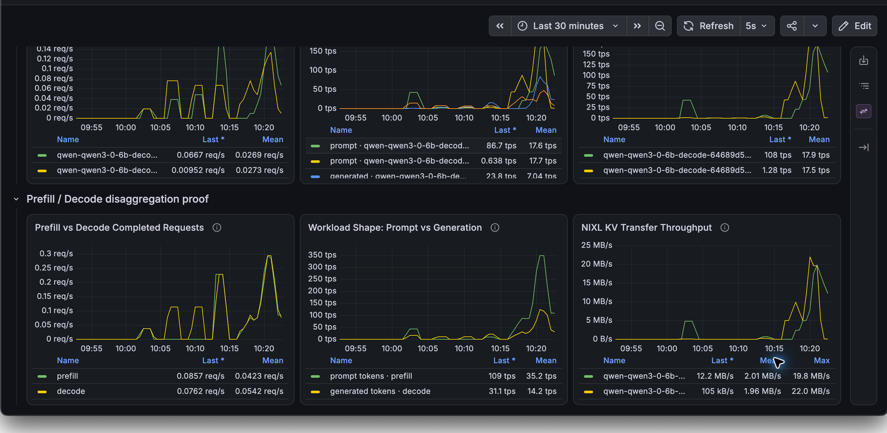
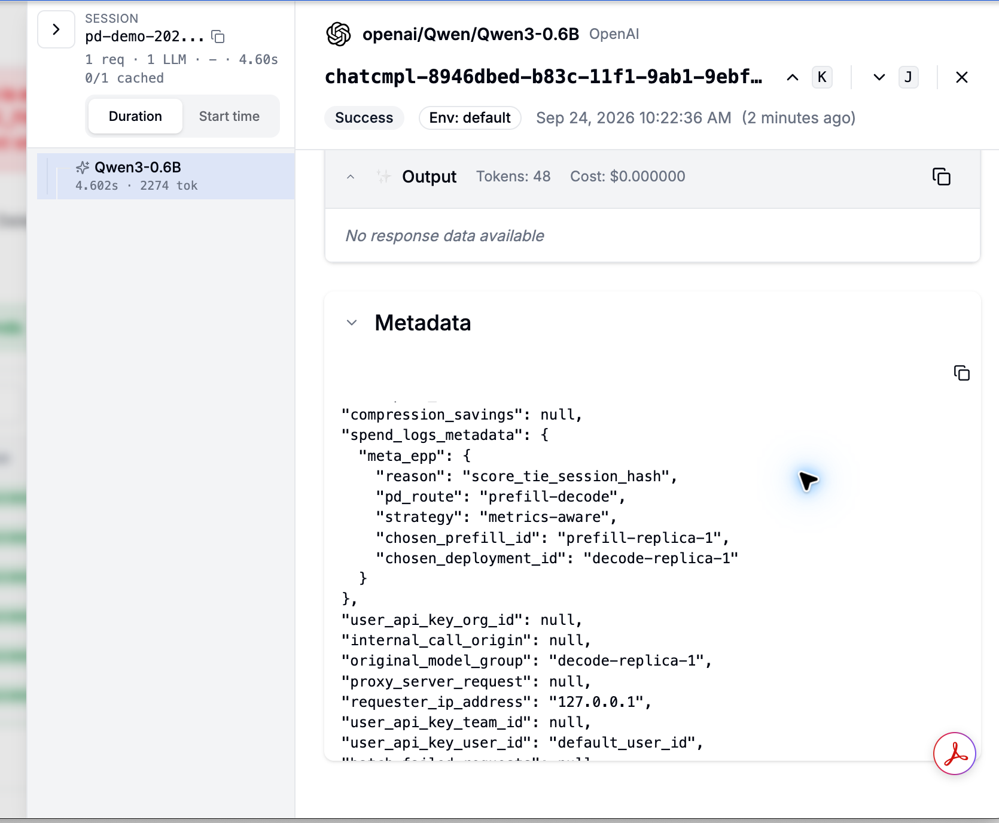
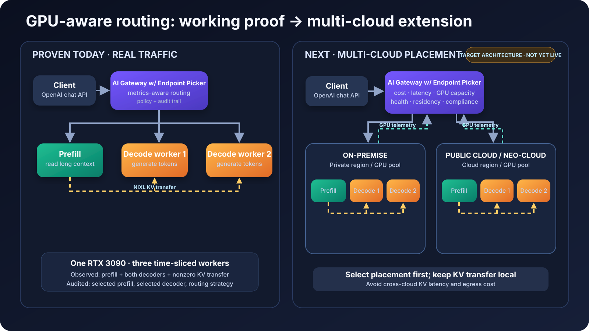

Expensive capacity
Uniform replicas leave specialized GPU resources underused.
AI infrastructure case study
A policy-driven AI Gateway that routes input-processing-heavy and output-generation-heavy AI workloads to separate GPU clusters, using live infrastructure signals to maximize GPU utilization and improve key AI metrics.
Long context · retrieval · histories
Reasoning · responses · token streams
The business problem
Long documents and conversation histories stress input processing. Detailed answers stress output generation. Scaling both as one indivisible service wastes expensive capacity and hides the reason for poor performance.
Uniform replicas leave specialized GPU resources underused.
Input and generation workloads create different bottlenecks.
Applications become tied to one provider, region, or accelerator.
Routing is difficult to explain when policy lives inside applications.
The solution
Applications keep a familiar API. The gateway evaluates health, queue depth, capacity, cache pressure, session affinity, and policy before selecting an input worker and an output worker.
Classify the workload shape and constraints.
Place the request in an eligible GPU environment.
Route each stage using live serving signals.
Record the complete infrastructure decision.
Working proof
The development validation runs one input-processing worker and two output-generation workers. The signals below move together under a controlled live workload.

Completed requests confirm both stages participate. Token rates expose distinct workload shapes. Transfer peaks near 20–22 MB/s across both output workers.

Every request retains its strategy, route, and selected workers.
Multi-cloud architecture
The validated local routing path becomes the building block for portable placement across clouds, regions, and accelerator pools.

Evaluate availability, accelerator compatibility, latency, cost, data residency, and customer policy.
Use fine-grained queue, cache, health, and affinity signals after selecting the placement.
Design principle: keep high-volume model-state transfer inside one placement domain while shifting new sessions across clouds when capacity or policy requires it.
Business outcomes
Place and scale input-heavy and output-heavy work independently.
Route using measured capacity and unit economics, not static preference.
Move new sessions away from unhealthy or saturated GPU pools.
Preserve one client API across on-premises and cloud environments.
Enforce residency, compliance, application, and customer constraints.
Correlate routing decisions with GPU, latency, and request telemetry.
Validated now
Next validation
My contribution
I designed the routing contract, implemented the gateway policy plug-in, created repeatable load profiles, integrated request-level decision metadata, built the operational dashboards, diagnosed GPU deployment constraints, and validated the complete path with real traffic.
Technical review
The implementation repository remains private to protect deployment details. Repository access and a live technical walkthrough are available for serious engineering conversations.
Private repository access requires an invitation.